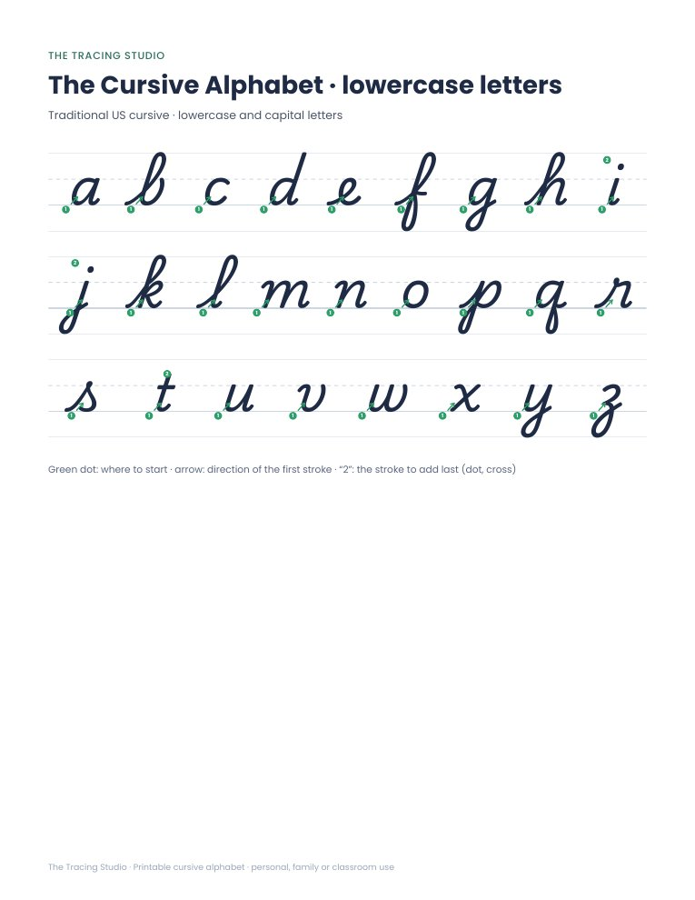
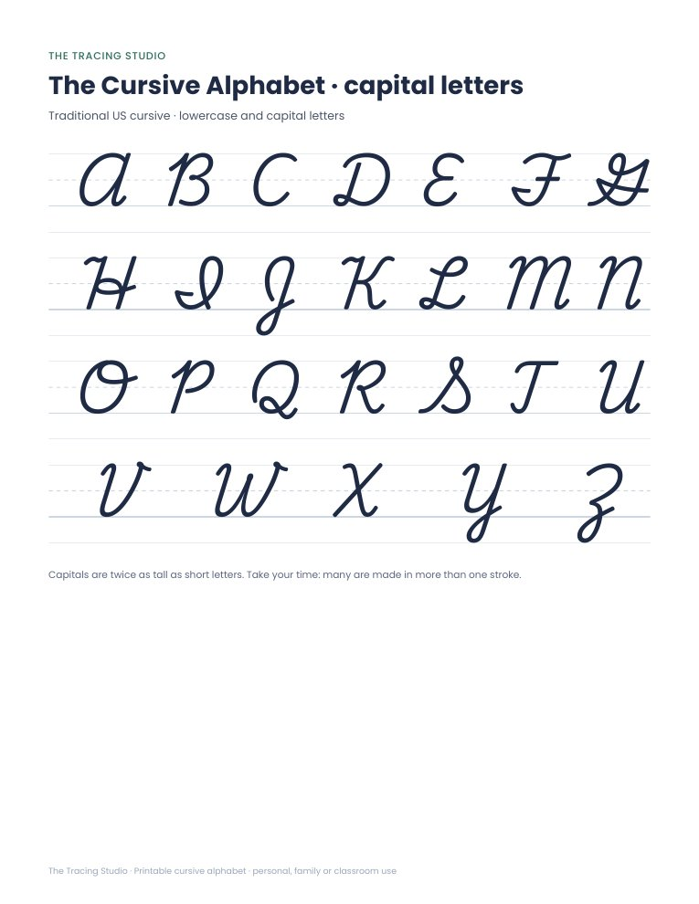

Free · printable PDF
Cursive alphabet printable
All 26 letters in traditional US cursive, lowercase and capital, with the starting point and stroke direction of each lowercase letter, plus practice lines.


8 US Letter pages: lowercase, capitals, then 5 pages to trace and copy. Print as many times as you like for personal, family or classroom use.
How to form cursive letters
- Most letters start on the baseline with a small upward stroke that connects them.
- Dot the i and j, and cross the t and x at the end, once the word is written.
- Learn by stroke families: swing-up letters (i, u, w, t), loop letters (e, l, b, h, k, f), curve letters (c, a, d, o, q, g), hump letters (n, m, v, x, y, z), and special letters (j, p, r, s).
- Capitals are twice as tall as short letters, and many take more than one stroke.
How to practice
- Look and say the stroke
Trace the letter with your finger from the green dot, saying the movement out loud. - Trace twice, no more
Just enough for your hand to feel the movement. - Copy, then write from memory
With the model covered: that’s what builds the skill.
Why this method? What research says.
Go further
One page per letter, everyday words and review pages: our workbooks use exactly this model.